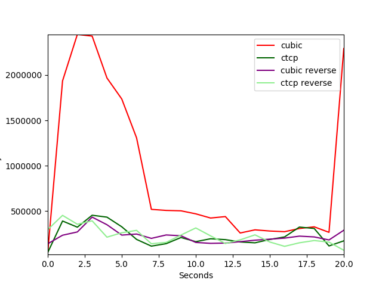
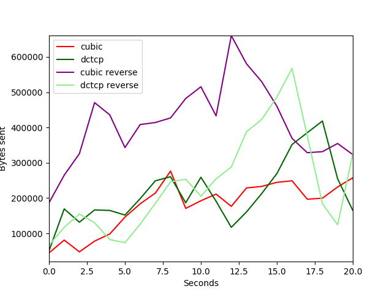
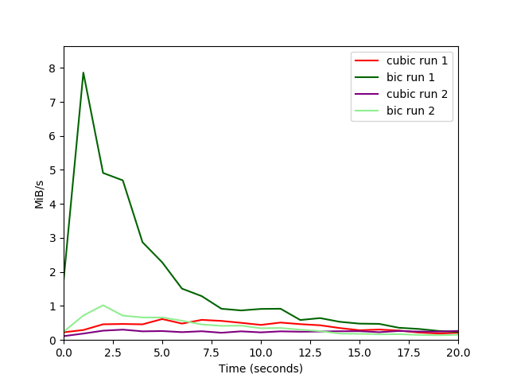
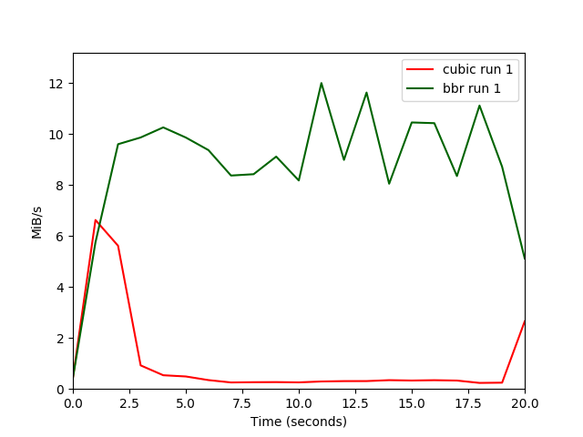

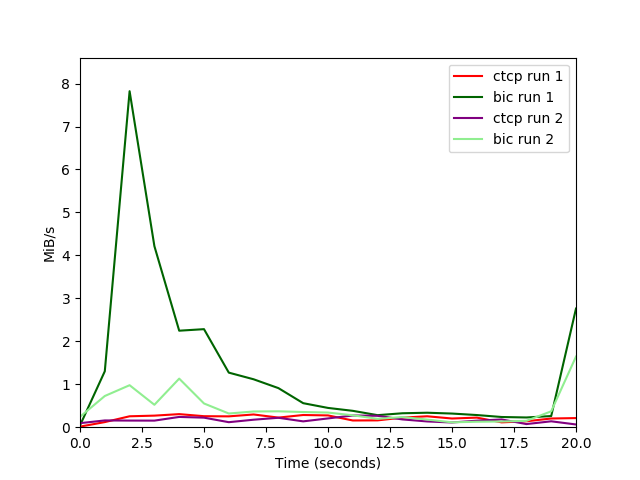
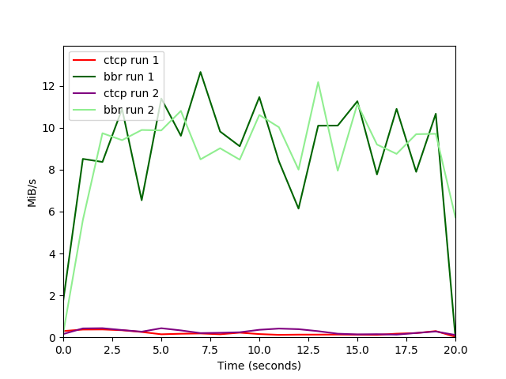
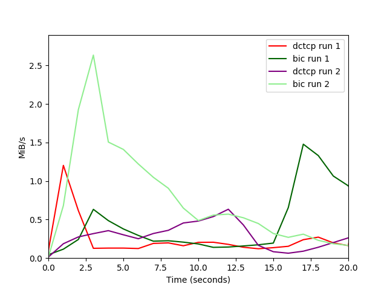
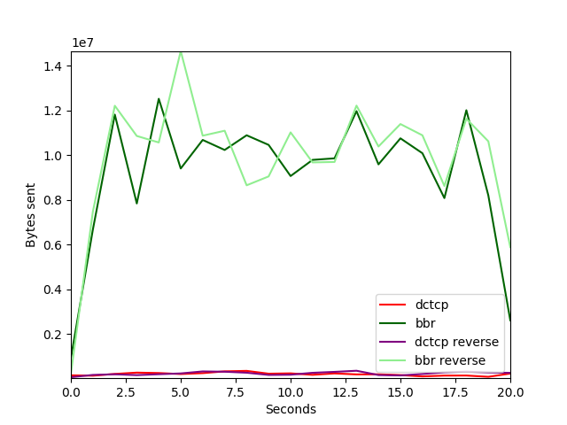

| cubic vs ctcp with 150ms delay and 0.6% loss 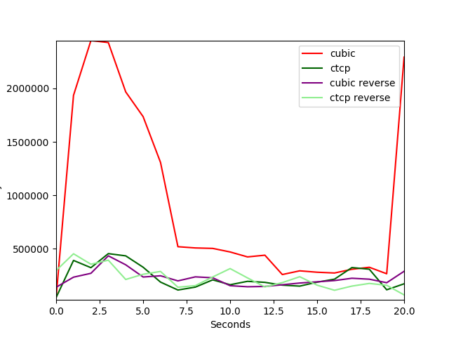 | cubic vs dctcp with 150ms delay and 0.6% loss 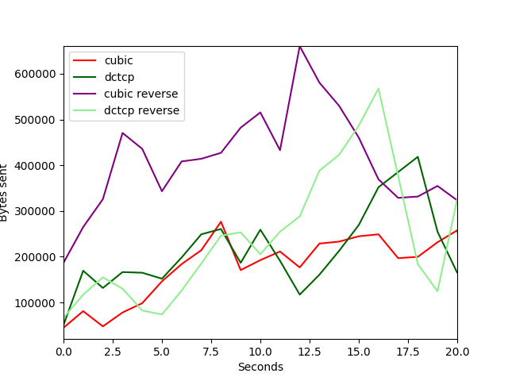 | cubic vs bic with 150ms delay and 0.6% loss 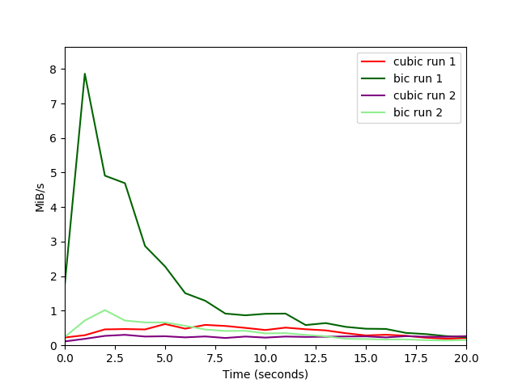 |
| cubic vs bbr with 150ms delay and 0.6% loss 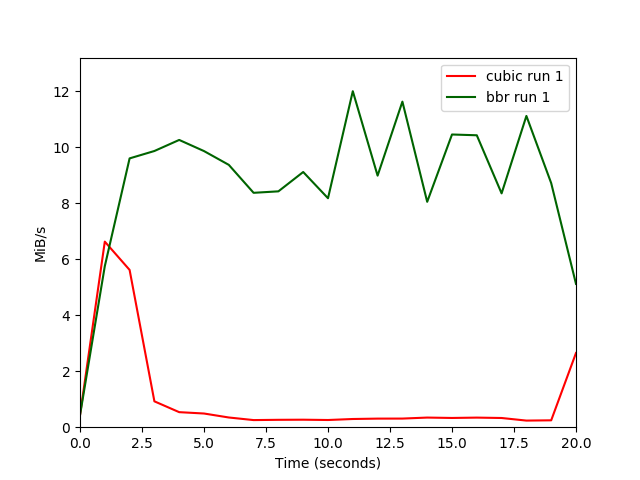 | ctcp vs dctcp with 150ms delay and 0.6% loss | ctcp vs bic with 150ms delay and 0.6% loss 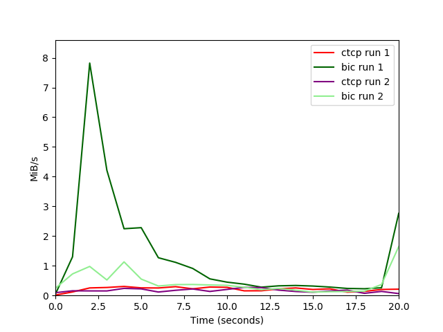 |
| ctcp vs bbr with 150ms delay and 0.6% loss 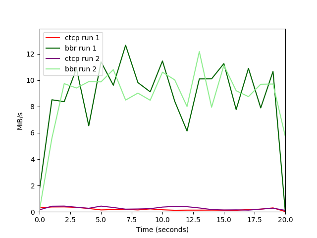 | dctcp vs bic with 150ms delay and 0.6% loss 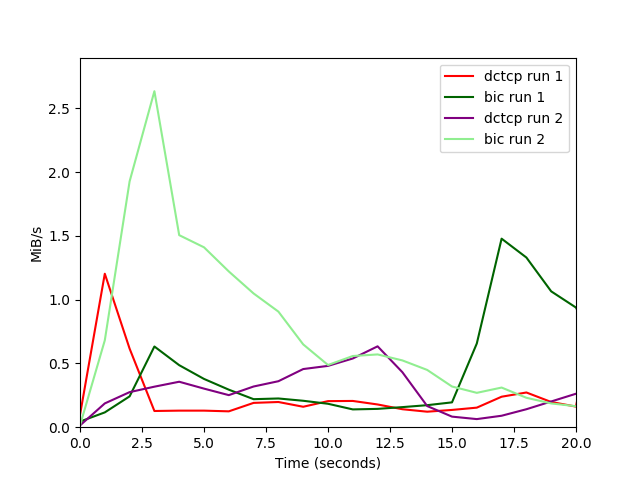 | dctcp vs bbr with 150ms delay and 0.6% loss 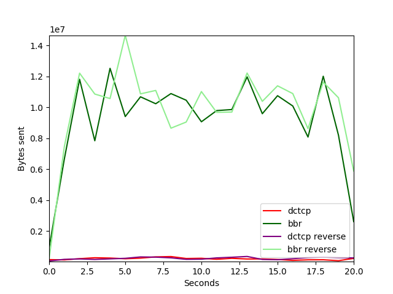 |
| bic vs bbr with 150ms delay and 0.6% loss |